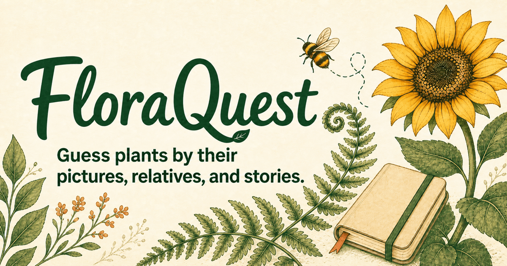

FloraQuest
A friendly guessing game that turns plant knowledge into a trail of clues, branches and discoveries.
The idea
In the classroom, a guess made before the answer is what makes the answer stick. FloraQuest is built on that. Three small games—Mystery Plant, Picture Guess and Plant Facts—give you a clue and let you commit to a name. Every plant you find lands in a Field Journal that grows the more you play.

How it went
- 01Private beta as PlantKin, thirty plants
- 02Public beta with a feedback page
- 03Renamed FloraQuest; difficulty paths
- 04Scoring, streaks and achievements
- 05A wrong guess becomes a lesson; accessibility pass
- 06Deployed publicly
- 07Full visual redesign
- 08325 plants; UK and India seasons
Design process
The hypothesis
A guess made before the answer makes the answer stick. I have watched that work in a classroom for years. The game exists to test whether the habit survives outside one, with no teacher in the room and nobody obliged to keep going.
What I needed to learn first
Three questions shaped the first beta. Do people understand the rules without being told? Is a wrong guess motivating or discouraging? Are the photographs recognisable to a beginner, or only to me? Everything else could wait.
How I tested it
A small private beta a week after the first build, then a public one. A feedback page sorted every note into four kinds: an idea, a confusing moment, a bug, or praise. I sat with people while they played and noted where they paused, what they tapped, and when they stopped. Alongside that, automated checks ran on every change: a content review of every plant, a session audit, an accessibility audit, and a script that checks the design system against its own rules.
What I saw
Confusion clustered in three places. Early hints that gave the answer away, a permanent score strip that pulled eyes from the clue, and a homepage that offered three equal doors to a first-time player. Phone users met sideways scrolling. Keyboard and screen-reader users could not use the plant search at all. End-of-round summaries read like a report card and nobody read them.
The wrong-guess question had a clear answer. A penalty on its own taught nothing. A wrong guess that shows how the two plants differ kept people playing.
What changed because of it
Every observation above became a change, and the table below is the record. Phone layouts were rebuilt. The plant search works from the keyboard and announces its results. Attempts, hints and achievements are read aloud as they change, and motion switches off when a device asks for it. A first-time player gets a guided first round.
The larger finding was that the game worked but looked like admin. By September I had painted a new hero illustration, written a design analysis against it, and rebuilt every screen: warm paper, deep green ink, two typefaces, one soft shadow, and a single orange accent that appears once per screen.
What I would measure next
Round completion by game, time to first solve for a new player, and whether people come back after a week. The beta records aggregate counts, not retention, so that is the gap. The catalogue is at 325 reviewed plants with seasonal collections for the United Kingdom and India, and the next work is on the clues themselves: shorter, kinder, and more like something a friend would say on a walk.
Findings, and what changed
What I learned
- Content is the product. Reviewing 325 plants shaped the game more than any feature.
- Rules you can say in one breath are rules people trust.
- A design system needs a way to check itself.